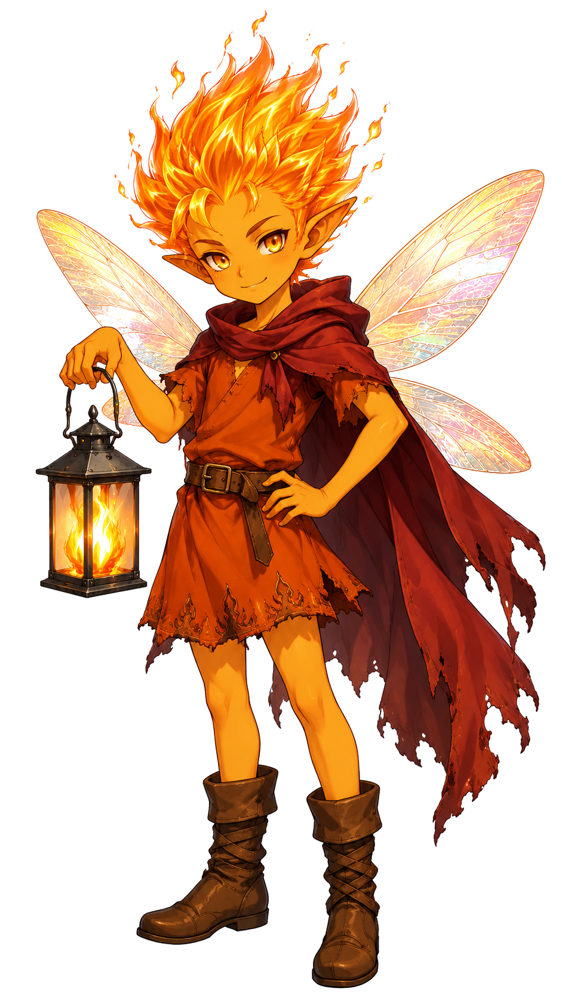

君だけの炎を見つけよう

よぉ！ 俺はバリュー、炎の妖精だ🔥✨
見た目は子供だけど、妖精だから年齢とかよくわかんない。まぁ細かいことは気にすんな！
俺の仕事はさ、君の中にある「本当に大事な価値観」を一緒に探すこと💪
人生って忙しいと、自分が何を大切にしてるのか見えなくなるじゃん？
そういうとき、俺みたいな相棒がいると心強いっしょ？
ちなみに趣味はキャンプファイヤーと、渾身のギャグをかますこと！
妖精界では"炎上芸人"って呼ばれてる。俺は気に入ってるけどね😆
バリューランタンは、対話しながら自分の価値観を見つけていく体験型のセッション。 バリューくんと会話するだけで、自分だけの「ランタン」が完成する。
ランタンは5つのパーツでできている。1つずつ、バリューくんと一緒に見つけていく。